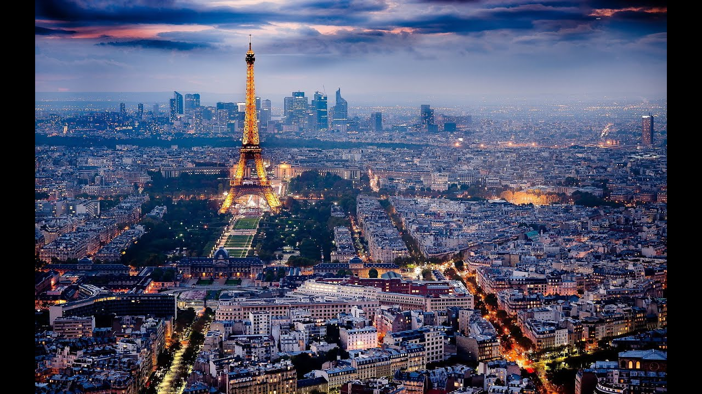

Destinations

- 


Tokyo is the administrative, cultural, financial, commercial,
educational centre of Japan and the focus of an extensive
urban complex that includes Kawasaki and Yokohama. Attractions
include the Imperial Palace, encircled by stone-walled
moats and broad gardens, and numerous temples and shrines.
educational centre of Japan and the focus of an extensive
urban complex that includes Kawasaki and Yokohama. Attractions
include the Imperial Palace, encircled by stone-walled
moats and broad gardens, and numerous temples and shrines.
Paris is one of the most beautiful cities in the world. It is
known worldwide for the Louvre Museum, Notre-Dame cathedral,
and the Eiffel tower. It has a reputation of being a romantic and
cultural city. The city is also known for its high-quality
gastronomy and the terraces of its cafes.
known worldwide for the Louvre Museum, Notre-Dame cathedral,
and the Eiffel tower. It has a reputation of being a romantic and
cultural city. The city is also known for its high-quality
gastronomy and the terraces of its cafes.
São Paulo, city, capital of São Paulo estado (state), southeastern
Brazil. It is the foremost industrial centre in Latin America.
The city is located on a plateau of the Brazilian Highlands extending
inland from the Serra do Mar, which rises as part of the Great Escarpment
only a short distance inland from the Atlantic Ocean. The city itself sits
in a shallow basin with low mountains to the west. It lies about
220 miles (350 km) southwest of Rio de Janeiro and about 30 miles (50 km)
inland from its Atlantic Ocean port of Santos. The city's name derives
from its having been founded by Jesuit missionaries on January 25,
1554, the anniversary of the conversion of St. Paul.
Brazil. It is the foremost industrial centre in Latin America.
The city is located on a plateau of the Brazilian Highlands extending
inland from the Serra do Mar, which rises as part of the Great Escarpment
only a short distance inland from the Atlantic Ocean. The city itself sits
in a shallow basin with low mountains to the west. It lies about
220 miles (350 km) southwest of Rio de Janeiro and about 30 miles (50 km)
inland from its Atlantic Ocean port of Santos. The city's name derives
from its having been founded by Jesuit missionaries on January 25,
1554, the anniversary of the conversion of St. Paul.
It is the largest city in the states with an area of 1,213.4 km²,
with a population of 50,666,542 million. The city has a distinct
geographical location, good transport infrastructure . It is divided administratively
into five neighborhoods: Staten Island, Queens, Brooklyn,
Manhattan and The Bronx.
with a population of 50,666,542 million. The city has a distinct
geographical location, good transport infrastructure . It is divided administratively
into five neighborhoods: Staten Island, Queens, Brooklyn,
Manhattan and The Bronx.